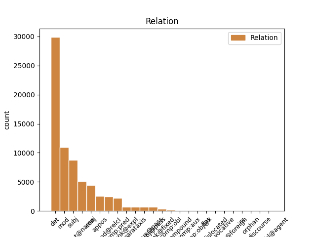
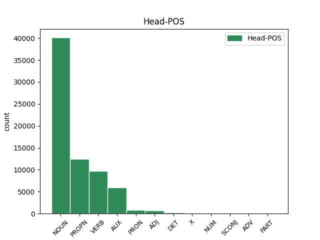
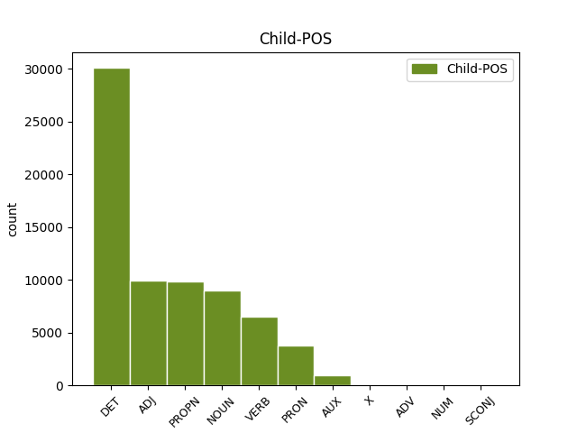

Distribution of features within this leaf



Agreement Rules sorted by frequency.
- When the dependent token is the determiner(det) of the head token,
1 Agarrado _ _ _ _ 0 _ _ _
2 a _ _ _ _ 0 _ _ _
3 o _ _ _ _ 0 _ _ _
4 copo _ _ _ _ 0 _ _ _
5 de _ _ _ _ 0 _ _ _
6 uísque _ _ _ _ 0 _ _ _
7 , _ _ _ _ 0 _ _ _
8 foi _ _ _ _ 0 _ _ _
9 outro _ _ _ _ 0 _ _ _
10 destaque _ _ _ _ 0 _ _ _
11 de _ _ _ _ 0 _ _ _
12 a o DET _ Definite=Def|Gender=Fem|Number=Sing|PronType=Art 13 det _ _
13 noite noite NOUN _ Gender=Fem|Number=Sing 0 _ _ _
14 . _ _ _ _ 0 _ _ _
1 Agarrado agarrar VERB _ Gender=Masc|Number=Sing|VerbForm=Part 10 mod _ _
2 a _ _ _ _ 0 _ _ _
3 o _ _ _ _ 0 _ _ _
4 copo _ _ _ _ 0 _ _ _
5 de _ _ _ _ 0 _ _ _
6 uísque _ _ _ _ 0 _ _ _
7 , _ _ _ _ 0 _ _ _
8 foi _ _ _ _ 0 _ _ _
9 outro _ _ _ _ 0 _ _ _
10 destaque destaque NOUN _ Gender=Masc|Number=Sing 0 _ _ _
11 de _ _ _ _ 0 _ _ _
12 a _ _ _ _ 0 _ _ _
13 noite _ _ _ _ 0 _ _ _
14 . _ _ _ _ 0 _ _ _
1 Corrêa Corrêa PROPN _ Gender=Masc|Number=Sing 2 subj _ _
2 trocaria trocar VERB _ Mood=Cnd|Number=Sing|Person=3|VerbForm=Fin 0 _ _ _
3 a _ _ _ _ 0 _ _ _
4 preocupação _ _ _ _ 0 _ _ _
5 por _ _ _ _ 0 _ _ _
6 a _ _ _ _ 0 _ _ _
7 descontração _ _ _ _ 0 _ _ _
8 . _ _ _ _ 0 _ _ _
1 Em _ _ _ _ 0 _ _ _
2 telefonema _ _ _ _ 0 _ _ _
3 a _ _ _ _ 0 _ _ _
4 Maurício _ _ _ _ 0 _ _ _
5 Corrêa _ _ _ _ 0 _ _ _
6 , _ _ _ _ 0 _ _ _
7 ministro _ _ _ _ 0 _ _ _
8 de _ _ _ _ 0 _ _ _
9 a _ _ _ _ 0 _ _ _
10 Justiça _ _ _ _ 0 _ _ _
11 , _ _ _ _ 0 _ _ _
12 o _ _ _ _ 0 _ _ _
13 governador _ _ _ _ 0 _ _ _
14 de _ _ _ _ 0 _ _ _
15 o _ _ _ _ 0 _ _ _
16 Rio _ _ _ _ 0 _ _ _
17 , _ _ _ _ 0 _ _ _
18 Leonel Leonel PROPN _ Gender=Masc|Number=Sing 0 _ _ _
19 Brizola Brizola PROPN _ Number=Sing 18 flat@name _ SpaceAfter=No
20 , _ _ _ _ 0 _ _ _
21 desaconselhou _ _ _ _ 0 _ _ _
22 a _ _ _ _ 0 _ _ _
23 ida _ _ _ _ 0 _ _ _
24 de _ _ _ _ 0 _ _ _
25 Itamar _ _ _ _ 0 _ _ _
26 a _ _ _ _ 0 _ _ _
27 o _ _ _ _ 0 _ _ _
28 Sambódromo _ _ _ _ 0 _ _ _
29 . _ _ _ _ 0 _ _ _
1 Avisado _ _ _ _ 0 _ _ _
2 de _ _ _ _ 0 _ _ _
3 o _ _ _ _ 0 _ _ _
4 alerta _ _ _ _ 0 _ _ _
5 de _ _ _ _ 0 _ _ _
6 o _ _ _ _ 0 _ _ _
7 governador _ _ _ _ 0 _ _ _
8 , _ _ _ _ 0 _ _ _
9 Itamar _ _ _ _ 0 _ _ _
10 desdenhou desdenhar VERB _ Mood=Ind|Number=Sing|Person=3|Tense=Past|VerbForm=Fin 0 _ _ _
11 os _ _ _ _ 0 _ _ _
12 riscos _ _ _ _ 0 _ _ _
13 e _ _ _ _ 0 _ _ _
14 manteve manter VERB _ Mood=Ind|Number=Sing|Person=3|Tense=Past|VerbForm=Fin 10 conj _ _
15 a _ _ _ _ 0 _ _ _
16 viagem _ _ _ _ 0 _ _ _
17 . _ _ _ _ 0 _ _ _
1 Em _ _ _ _ 0 _ _ _
2 telefonema _ _ _ _ 0 _ _ _
3 a _ _ _ _ 0 _ _ _
4 Maurício _ _ _ _ 0 _ _ _
5 Corrêa _ _ _ _ 0 _ _ _
6 , _ _ _ _ 0 _ _ _
7 ministro _ _ _ _ 0 _ _ _
8 de _ _ _ _ 0 _ _ _
9 a _ _ _ _ 0 _ _ _
10 Justiça _ _ _ _ 0 _ _ _
11 , _ _ _ _ 0 _ _ _
12 o _ _ _ _ 0 _ _ _
13 governador _ _ _ _ 0 _ _ _
14 de _ _ _ _ 0 _ _ _
15 o _ _ _ _ 0 _ _ _
16 Rio Rio PROPN _ Gender=Masc|Number=Sing 0 _ _ _
17 , _ _ _ _ 0 _ _ _
18 Leonel Leonel PROPN _ Gender=Masc|Number=Sing 16 appos _ MWE=Leonel_Brizola|MWEPOS=PROPN
19 Brizola _ _ _ _ 0 _ _ _
20 , _ _ _ _ 0 _ _ _
21 desaconselhou _ _ _ _ 0 _ _ _
22 a _ _ _ _ 0 _ _ _
23 ida _ _ _ _ 0 _ _ _
24 de _ _ _ _ 0 _ _ _
25 Itamar _ _ _ _ 0 _ _ _
26 a _ _ _ _ 0 _ _ _
27 o _ _ _ _ 0 _ _ _
28 Sambódromo _ _ _ _ 0 _ _ _
29 . _ _ _ _ 0 _ _ _
1 A _ _ _ _ 0 _ _ _
2 Polícia _ _ _ _ 0 _ _ _
3 Federal _ _ _ _ 0 _ _ _
4 prendeu _ _ _ _ 0 _ _ _
5 ontem _ _ _ _ 0 _ _ _
6 em _ _ _ _ 0 _ _ _
7 Brasília _ _ _ _ 0 _ _ _
8 Vicente _ _ _ _ 0 _ _ _
9 Wilson _ _ _ _ 0 _ _ _
10 Rivera _ _ _ _ 0 _ _ _
11 Ramos _ _ _ _ 0 _ _ _
12 , _ _ _ _ 0 _ _ _
13 o _ _ _ _ 0 _ _ _
14 « _ _ _ _ 0 _ _ _
15 Vicentico _ _ _ _ 0 _ _ _
16 » _ _ _ _ 0 _ _ _
17 , _ _ _ _ 0 _ _ _
18 filho _ _ _ _ 0 _ _ _
19 de _ _ _ _ 0 _ _ _
20 um _ _ _ _ 0 _ _ _
21 de _ _ _ _ 0 _ _ _
22 os _ _ _ _ 0 _ _ _
23 chefes _ _ _ _ 0 _ _ _
24 de _ _ _ _ 0 _ _ _
25 o _ _ _ _ 0 _ _ _
26 Cartel _ _ _ _ 0 _ _ _
27 de _ _ _ _ 0 _ _ _
28 Cáli _ _ _ _ 0 _ _ _
29 ( _ _ _ _ 0 _ _ _
30 organização organização NOUN _ Gender=Fem|Number=Sing 0 _ _ _
31 colombiana _ _ _ _ 0 _ _ _
32 que _ _ _ _ 0 _ _ _
33 trafica traficar VERB _ Mood=Ind|Number=Sing|Person=3|Tense=Pres|VerbForm=Fin 30 mod@relcl _ _
34 drogas _ _ _ _ 0 _ _ _
35 ) _ _ _ _ 0 _ _ _
36 . _ _ _ _ 0 _ _ _
1 Agarrado _ _ _ _ 0 _ _ _
2 a _ _ _ _ 0 _ _ _
3 o _ _ _ _ 0 _ _ _
4 copo _ _ _ _ 0 _ _ _
5 de _ _ _ _ 0 _ _ _
6 uísque _ _ _ _ 0 _ _ _
7 , _ _ _ _ 0 _ _ _
8 foi ser AUX _ Mood=Ind|Number=Sing|Person=3|Tense=Past|VerbForm=Fin 0 _ _ _
9 outro _ _ _ _ 0 _ _ _
10 destaque destaque NOUN _ Gender=Masc|Number=Sing 8 comp:pred _ _
11 de _ _ _ _ 0 _ _ _
12 a _ _ _ _ 0 _ _ _
13 noite _ _ _ _ 0 _ _ _
14 . _ _ _ _ 0 _ _ _
1 Os _ _ _ _ 0 _ _ _
2 norte-americanos _ _ _ _ 0 _ _ _
3 que _ _ _ _ 0 _ _ _
4 se se PRON _ Case=Acc|Gender=Masc|Number=Plur|Person=3|PronType=Prs 5 unk@expl _ _
5 reuniram reunir VERB _ Mood=Ind|Number=Plur|Person=3|VerbForm=Fin 0 _ _ _
6 ontem _ _ _ _ 0 _ _ _
7 em _ _ _ _ 0 _ _ _
8 a _ _ _ _ 0 _ _ _
9 Câmara _ _ _ _ 0 _ _ _
10 de _ _ _ _ 0 _ _ _
11 Comércio _ _ _ _ 0 _ _ _
12 Brasil-Estados _ _ _ _ 0 _ _ _
13 Unidos _ _ _ _ 0 _ _ _
14 , _ _ _ _ 0 _ _ _
15 em _ _ _ _ 0 _ _ _
16 São _ _ _ _ 0 _ _ _
17 Paulo _ _ _ _ 0 _ _ _
18 , _ _ _ _ 0 _ _ _
19 ficaram _ _ _ _ 0 _ _ _
20 conformados _ _ _ _ 0 _ _ _
21 com _ _ _ _ 0 _ _ _
22 a _ _ _ _ 0 _ _ _
23 derrota _ _ _ _ 0 _ _ _
24 de _ _ _ _ 0 _ _ _
25 sua _ _ _ _ 0 _ _ _
26 seleção _ _ _ _ 0 _ _ _
27 . _ _ _ _ 0 _ _ _
1 Filho _ _ _ _ 0 _ _ _
2 de _ _ _ _ 0 _ _ _
3 Vicente _ _ _ _ 0 _ _ _
4 Rivera _ _ _ _ 0 _ _ _
5 Gonzalez _ _ _ _ 0 _ _ _
6 , _ _ _ _ 0 _ _ _
7 ele _ _ _ _ 0 _ _ _
8 já _ _ _ _ 0 _ _ _
9 foi ser AUX _ Mood=Ind|Number=Sing|Person=3|Tense=Past|VerbForm=Fin 0 _ _ _
10 condenado condenar VERB _ Gender=Masc|Number=Sing|VerbForm=Part|Voice=Pass 9 comp:aux@pass _ _
11 em _ _ _ _ 0 _ _ _
12 a _ _ _ _ 0 _ _ _
13 Holanda _ _ _ _ 0 _ _ _
14 a _ _ _ _ 0 _ _ _
15 14 _ _ _ _ 0 _ _ _
16 anos _ _ _ _ 0 _ _ _
17 de _ _ _ _ 0 _ _ _
18 prisão _ _ _ _ 0 _ _ _
19 , _ _ _ _ 0 _ _ _
20 segundo _ _ _ _ 0 _ _ _
21 a _ _ _ _ 0 _ _ _
22 PF _ _ _ _ 0 _ _ _
23 . _ _ _ _ 0 _ _ _
1 Os _ _ _ _ 0 _ _ _
2 receios receio NOUN _ Gender=Masc|Number=Plur 12 subj@pass _ _
3 de _ _ _ _ 0 _ _ _
4 Durante _ _ _ _ 0 _ _ _
5 quanto _ _ _ _ 0 _ _ _
6 a _ _ _ _ 0 _ _ _
7 a _ _ _ _ 0 _ _ _
8 reação _ _ _ _ 0 _ _ _
9 de _ _ _ _ 0 _ _ _
10 a _ _ _ _ 0 _ _ _
11 platéia _ _ _ _ 0 _ _ _
12 eram ser AUX _ Mood=Ind|Number=Plur|Person=3|Tense=Imp|VerbForm=Fin 0 _ _ _
13 compartilhados _ _ _ _ 0 _ _ _
14 por _ _ _ _ 0 _ _ _
15 o _ _ _ _ 0 _ _ _
16 restante _ _ _ _ 0 _ _ _
17 de _ _ _ _ 0 _ _ _
18 a _ _ _ _ 0 _ _ _
19 comitiva _ _ _ _ 0 _ _ _
20 . _ _ _ _ 0 _ _ _
1 « _ _ _ _ 0 _ _ _
2 A _ _ _ _ 0 _ _ _
3 reação _ _ _ _ 0 _ _ _
4 de _ _ _ _ 0 _ _ _
5 o _ _ _ _ 0 _ _ _
6 público _ _ _ _ 0 _ _ _
7 é ser AUX _ Mood=Ind|Number=Sing|Person=3|Tense=Pres|VerbForm=Fin 11 parataxis _ _
8 imprevisível _ _ _ _ 0 _ _ _
9 » _ _ _ _ 0 _ _ _
10 , _ _ _ _ 0 _ _ _
11 disse dizer VERB _ Mood=Ind|Number=Sing|Person=3|Tense=Past|VerbForm=Fin 0 _ _ _
12 . _ _ _ _ 0 _ _ _
1 A _ _ _ _ 0 _ _ _
2 Argentina _ _ _ _ 0 _ _ _
3 , _ _ _ _ 0 _ _ _
4 por _ _ _ _ 0 _ _ _
5 exemplo _ _ _ _ 0 _ _ _
6 , _ _ _ _ 0 _ _ _
7 era _ _ _ _ 0 _ _ _
8 bem _ _ _ _ 0 _ _ _
9 mais _ _ _ _ 0 _ _ _
10 pró-nazi _ _ _ _ 0 _ _ _
11 de _ _ _ _ 0 _ _ _
12 o o PRON _ Gender=Masc|Number=Sing|PronType=Dem 0 _ _ _
13 que que PRON _ Gender=Masc|Number=Sing|PronType=Rel 12 unk@fixed _ _
14 o _ _ _ _ 0 _ _ _
15 Brasil _ _ _ _ 0 _ _ _
16 . _ _ _ _ 0 _ _ _
1 Jamais _ _ _ _ 0 _ _ _
2 ninguém _ _ _ _ 0 _ _ _
3 me eu PRON _ Case=Dat|Gender=Unsp|Number=Sing|Person=1|PronType=Prs 4 comp:obl _ _
4 pediu pedir VERB _ Mood=Ind|Number=Sing|Person=3|Tense=Past|VerbForm=Fin 0 _ _ _
5 nada _ _ _ _ 0 _ _ _
6 . _ _ _ _ 0 _ _ _
1 De _ _ _ _ 0 _ _ _
2 o _ _ _ _ 0 _ _ _
3 ponto ponto NOUN _ Gender=Masc|Number=Sing 0 _ _ _
4 de _ _ _ _ 0 _ _ _
5 vista vista NOUN _ Gender=Fem|Number=Sing 3 compound _ _
6 lógico _ _ _ _ 0 _ _ _
7 , _ _ _ _ 0 _ _ _
8 um _ _ _ _ 0 _ _ _
9 plano _ _ _ _ 0 _ _ _
10 de _ _ _ _ 0 _ _ _
11 estabilização _ _ _ _ 0 _ _ _
12 equivale _ _ _ _ 0 _ _ _
13 a _ _ _ _ 0 _ _ _
14 uma _ _ _ _ 0 _ _ _
15 promessa _ _ _ _ 0 _ _ _
16 . _ _ _ _ 0 _ _ _
1 « _ _ _ _ 0 _ _ _
2 Vicentico _ _ _ _ 0 _ _ _
3 » _ _ _ _ 0 _ _ _
4 havia haver AUX _ Mood=Ind|Number=Sing|Person=3|Tense=Imp|VerbForm=Fin 0 _ _ _
5 escapado escapar VERB _ Gender=Masc|Number=Sing|VerbForm=Part 4 comp:aux _ _
6 de _ _ _ _ 0 _ _ _
7 o _ _ _ _ 0 _ _ _
8 cerco _ _ _ _ 0 _ _ _
9 de _ _ _ _ 0 _ _ _
10 a _ _ _ _ 0 _ _ _
11 PF _ _ _ _ 0 _ _ _
12 , _ _ _ _ 0 _ _ _
13 em _ _ _ _ 0 _ _ _
14 o _ _ _ _ 0 _ _ _
15 domingo _ _ _ _ 0 _ _ _
16 , _ _ _ _ 0 _ _ _
17 quando _ _ _ _ 0 _ _ _
18 foram _ _ _ _ 0 _ _ _
19 apreendidas _ _ _ _ 0 _ _ _
20 7,5 _ _ _ _ 0 _ _ _
21 toneladas _ _ _ _ 0 _ _ _
22 de _ _ _ _ 0 _ _ _
23 cocaína _ _ _ _ 0 _ _ _
24 em _ _ _ _ 0 _ _ _
25 Guaraí _ _ _ _ 0 _ _ _
26 ( _ _ _ _ 0 _ _ _
27 TO _ _ _ _ 0 _ _ _
28 ) _ _ _ _ 0 _ _ _
29 . _ _ _ _ 0 _ _ _
1 « _ _ _ _ 0 _ _ _
2 O _ _ _ _ 0 _ _ _
3 Viola _ _ _ _ 0 _ _ _
4 ou _ _ _ _ 0 _ _ _
5 o _ _ _ _ 0 _ _ _
6 Ronaldão _ _ _ _ 0 _ _ _
7 seria _ _ _ _ 0 _ _ _
8 um _ _ _ _ 0 _ _ _
9 ' _ _ _ _ 0 _ _ _
10 black _ _ _ _ 0 _ _ _
11 man _ _ _ _ 0 _ _ _
12 ' _ _ _ _ 0 _ _ _
13 perfeito _ _ _ _ 0 _ _ _
14 » _ _ _ _ 0 _ _ _
15 disse _ _ _ _ 0 _ _ _
16 um _ _ _ _ 0 _ _ _
17 de _ _ _ _ 0 _ _ _
18 os _ _ _ _ 0 _ _ _
19 modelos _ _ _ _ 0 _ _ _
20 masculinos _ _ _ _ 0 _ _ _
21 de _ _ _ _ 0 _ _ _
22 a _ _ _ _ 0 _ _ _
23 Ford _ _ _ _ 0 _ _ _
24 , _ _ _ _ 0 _ _ _
25 que _ _ _ _ 0 _ _ _
26 também _ _ _ _ 0 _ _ _
27 não _ _ _ _ 0 _ _ _
28 quis querer VERB _ Mood=Ind|Number=Sing|Person=3|Tense=Past|VerbForm=Fin 0 _ _ _
29 se _ _ _ _ 0 _ _ _
30 identificar identificar VERB _ Number=Sing|Person=3|VerbForm=Inf 28 comp:obj@x _ SpaceAfter=No
31 . _ _ _ _ 0 _ _ _
1 « _ _ _ _ 0 _ _ _
2 Chega _ _ _ _ 0 _ _ _
3 de _ _ _ _ 0 _ _ _
4 violência _ _ _ _ 0 _ _ _
5 / _ _ _ _ 0 _ _ _
6 Quero _ _ _ _ 0 _ _ _
7 ver _ _ _ _ 0 _ _ _
8 é _ _ _ _ 0 _ _ _
9 gol _ _ _ _ 0 _ _ _
10 de _ _ _ _ 0 _ _ _
11 placa _ _ _ _ 0 _ _ _
12 / _ _ _ _ 0 _ _ _
13 Todo _ _ _ _ 0 _ _ _
14 mundo _ _ _ _ 0 _ _ _
15 se _ _ _ _ 0 _ _ _
16 dá _ _ _ _ 0 _ _ _
17 mal _ _ _ _ 0 _ _ _
18 / _ _ _ _ 0 _ _ _
19 Por _ _ _ _ 0 _ _ _
20 meia meia NUM _ Gender=Masc|Number=Sing|NumType=Frac 0 _ _ _
21 dúzia dúzia NUM _ Gender=Masc|Number=Sing|NumType=Card 20 flat _ _
22 de _ _ _ _ 0 _ _ _
23 babacas _ _ _ _ 0 _ _ _
24 . _ _ _ _ 0 _ _ _
25 » _ _ _ _ 0 _ _ _
1 Alec Alec PROPN _ Gender=Fem|Number=Sing 3 vocative _ _
2 Eu _ _ _ _ 0 _ _ _
3 quero querer VERB _ Mood=Ind|Number=Sing|Person=1|Tense=Pres|VerbForm=Fin 0 _ _ _
4 viver _ _ _ _ 0 _ _ _
5 , _ _ _ _ 0 _ _ _
6 eu _ _ _ _ 0 _ _ _
7 quero _ _ _ _ 0 _ _ _
8 não _ _ _ _ 0 _ _ _
9 fazer _ _ _ _ 0 _ _ _
10 nada _ _ _ _ 0 _ _ _
11 . _ _ _ _ 0 _ _ _
1 Conquistou _ _ _ _ 0 _ _ _
2 o _ _ _ _ 0 _ _ _
3 título _ _ _ _ 0 _ _ _
4 mundial _ _ _ _ 0 _ _ _
5 de _ _ _ _ 0 _ _ _
6 este _ _ _ _ 0 _ _ _
7 ano _ _ _ _ 0 _ _ _
8 com _ _ _ _ 0 _ _ _
9 a _ _ _ _ 0 _ _ _
10 seleção _ _ _ _ 0 _ _ _
11 de _ _ _ _ 0 _ _ _
12 seu _ _ _ _ 0 _ _ _
13 país _ _ _ _ 0 _ _ _
14 , _ _ _ _ 0 _ _ _
15 o _ _ _ _ 0 _ _ _
16 « _ _ _ _ 0 _ _ _
17 Dream Dream X _ Gender=Masc|Number=Sing 0 _ _ _
18 Team Team X _ Number=Sing 17 flat@foreign _ SpaceAfter=No
19 » _ _ _ _ 0 _ _ _
20 ( _ _ _ _ 0 _ _ _
21 Time _ _ _ _ 0 _ _ _
22 de _ _ _ _ 0 _ _ _
23 os _ _ _ _ 0 _ _ _
24 Sonhos _ _ _ _ 0 _ _ _
25 ) _ _ _ _ 0 _ _ _
26 2 _ _ _ _ 0 _ _ _
27 . _ _ _ _ 0 _ _ _
1 O _ _ _ _ 0 _ _ _
2 PCP _ _ _ _ 0 _ _ _
3 , _ _ _ _ 0 _ _ _
4 esse esse DET _ Gender=Masc|Number=Sing|PronType=Dem 6 dislocated _ SpaceAfter=No
5 , _ _ _ _ 0 _ _ _
6 está estar AUX _ Mood=Ind|Number=Sing|Person=3|Tense=Pres|VerbForm=Fin 0 _ _ _
7 sempre _ _ _ _ 0 _ _ _
8 bem _ _ _ _ 0 _ _ _
9 e _ _ _ _ 0 _ _ _
10 com _ _ _ _ 0 _ _ _
11 pouco _ _ _ _ 0 _ _ _
12 trabalho _ _ _ _ 0 _ _ _
13 por _ _ _ _ 0 _ _ _
14 a _ _ _ _ 0 _ _ _
15 frente _ _ _ _ 0 _ _ _
16 . _ _ _ _ 0 _ _ _
1 Elas _ _ _ _ 0 _ _ _
2 pertencem _ _ _ _ 0 _ _ _
3 basicamente _ _ _ _ 0 _ _ _
4 a _ _ _ _ 0 _ _ _
5 a _ _ _ _ 0 _ _ _
6 categoria _ _ _ _ 0 _ _ _
7 « _ _ _ _ 0 _ _ _
8 fuzil _ _ _ _ 0 _ _ _
9 automático _ _ _ _ 0 _ _ _
10 » _ _ _ _ 0 _ _ _
11 , _ _ _ _ 0 _ _ _
12 isto isto PRON _ Gender=Masc|Number=Sing|PronType=Dem 16 cc _ MWE=isto_é|MWEPOS=CCONJ
13 é _ _ _ _ 0 _ _ _
14 , _ _ _ _ 0 _ _ _
15 um _ _ _ _ 0 _ _ _
16 híbrido híbrido NOUN _ Gender=Masc|Number=Sing 0 _ _ _
17 surgido _ _ _ _ 0 _ _ _
18 em _ _ _ _ 0 _ _ _
19 a _ _ _ _ 0 _ _ _
20 Segunda _ _ _ _ 0 _ _ _
21 Guerra _ _ _ _ 0 _ _ _
22 entre _ _ _ _ 0 _ _ _
23 os _ _ _ _ 0 _ _ _
24 tradicionais _ _ _ _ 0 _ _ _
25 fuzis _ _ _ _ 0 _ _ _
26 e _ _ _ _ 0 _ _ _
27 metralhadoras _ _ _ _ 0 _ _ _
28 de _ _ _ _ 0 _ _ _
29 mão _ _ _ _ 0 _ _ _
30 ou _ _ _ _ 0 _ _ _
31 submetralhadoras _ _ _ _ 0 _ _ _
32 . _ _ _ _ 0 _ _ _
1 O _ _ _ _ 0 _ _ _
2 norte-americano _ _ _ _ 0 _ _ _
3 Pete _ _ _ _ 0 _ _ _
4 Sampras _ _ _ _ 0 _ _ _
5 foi _ _ _ _ 0 _ _ _
6 afastado afastar VERB _ Gender=Masc|Number=Sing|VerbForm=Part|Voice=Pass 0 _ _ _
7 por _ _ _ _ 0 _ _ _
8 o _ _ _ _ 0 _ _ _
9 seu _ _ _ _ 0 _ _ _
10 compatriota _ _ _ _ 0 _ _ _
11 Jim Jim PROPN _ Gender=Masc|Number=Sing 6 comp:obl@agent _ MWE=Jim_Courier|MWEPOS=PROPN
12 Courier _ _ _ _ 0 _ _ _
13 ( _ _ _ _ 0 _ _ _
14 24º _ _ _ _ 0 _ _ _
15 ATP _ _ _ _ 0 _ _ _
16 ) _ _ _ _ 0 _ _ _
17 por _ _ _ _ 0 _ _ _
18 os _ _ _ _ 0 _ _ _
19 parciais _ _ _ _ 0 _ _ _
20 de _ _ _ _ 0 _ _ _
21 7-6 _ _ _ _ 0 _ _ _
22 ( _ _ _ _ 0 _ _ _
23 7-5 _ _ _ _ 0 _ _ _
24 ) _ _ _ _ 0 _ _ _
25 , _ _ _ _ 0 _ _ _
26 6-4 _ _ _ _ 0 _ _ _
27 , _ _ _ _ 0 _ _ _
28 o _ _ _ _ 0 _ _ _
29 que _ _ _ _ 0 _ _ _
30 significa _ _ _ _ 0 _ _ _
31 que _ _ _ _ 0 _ _ _
32 o _ _ _ _ 0 _ _ _
33 número _ _ _ _ 0 _ _ _
34 um _ _ _ _ 0 _ _ _
35 de _ _ _ _ 0 _ _ _
36 o _ _ _ _ 0 _ _ _
37 mundo _ _ _ _ 0 _ _ _
38 vai _ _ _ _ 0 _ _ _
39 chegar _ _ _ _ 0 _ _ _
40 a _ _ _ _ 0 _ _ _
41 a _ _ _ _ 0 _ _ _
42 « _ _ _ _ 0 _ _ _
43 catedral _ _ _ _ 0 _ _ _
44 de _ _ _ _ 0 _ _ _
45 a _ _ _ _ 0 _ _ _
46 terra _ _ _ _ 0 _ _ _
47 batida _ _ _ _ 0 _ _ _
48 » _ _ _ _ 0 _ _ _
49 , _ _ _ _ 0 _ _ _
50 Roland _ _ _ _ 0 _ _ _
51 Garros _ _ _ _ 0 _ _ _
52 , _ _ _ _ 0 _ _ _
53 com _ _ _ _ 0 _ _ _
54 duas _ _ _ _ 0 _ _ _
55 derrotas _ _ _ _ 0 _ _ _
56 em _ _ _ _ 0 _ _ _
57 outros _ _ _ _ 0 _ _ _
58 tantos _ _ _ _ 0 _ _ _
59 encontros _ _ _ _ 0 _ _ _
60 disputados _ _ _ _ 0 _ _ _
61 sobre _ _ _ _ 0 _ _ _
62 o _ _ _ _ 0 _ _ _
63 pó _ _ _ _ 0 _ _ _
64 de _ _ _ _ 0 _ _ _
65 tijolo _ _ _ _ 0 _ _ _
66 . _ _ _ _ 0 _ _ _
1 George _ _ _ _ 0 _ _ _
2 fazia _ _ _ _ 0 _ _ _
3 a _ _ _ _ 0 _ _ _
4 música música NOUN _ Gender=Fem|Number=Sing 0 _ _ _
5 , _ _ _ _ 0 _ _ _
6 Ira _ _ _ _ 0 _ _ _
7 a _ _ _ _ 0 _ _ _
8 letra letra NOUN _ Gender=Fem|Number=Sing 4 orphan _ SpaceAfter=No
9 , _ _ _ _ 0 _ _ _
10 embora _ _ _ _ 0 _ _ _
11 , _ _ _ _ 0 _ _ _
12 como _ _ _ _ 0 _ _ _
13 em _ _ _ _ 0 _ _ _
14 toda _ _ _ _ 0 _ _ _
15 parceria _ _ _ _ 0 _ _ _
16 , _ _ _ _ 0 _ _ _
17 cada _ _ _ _ 0 _ _ _
18 qual _ _ _ _ 0 _ _ _
19 desse _ _ _ _ 0 _ _ _
20 palpites _ _ _ _ 0 _ _ _
21 em _ _ _ _ 0 _ _ _
22 a _ _ _ _ 0 _ _ _
23 especialidade _ _ _ _ 0 _ _ _
24 de _ _ _ _ 0 _ _ _
25 o _ _ _ _ 0 _ _ _
26 outro _ _ _ _ 0 _ _ _
27 . _ _ _ _ 0 _ _ _
Disagree Examples:
1 O _ _ _ _ 0 _ _ _
2 7 _ _ _ _ 0 _ _ _
3 e _ _ _ _ 0 _ _ _
4 Meio _ _ _ _ 0 _ _ _
5 é _ _ _ _ 0 _ _ _
6 um um DET _ Definite=Ind|Gender=Masc|Number=Sing|PronType=Art 7 det _ _
7 ex-libris ex-libris NOUN _ Gender=Masc|Number=Plur 0 _ _ _
8 de _ _ _ _ 0 _ _ _
9 a _ _ _ _ 0 _ _ _
10 noite _ _ _ _ 0 _ _ _
11 algarvia _ _ _ _ 0 _ _ _
12 . _ _ _ _ 0 _ _ _
1 O _ _ _ _ 0 _ _ _
2 7 _ _ _ _ 0 _ _ _
3 e _ _ _ _ 0 _ _ _
4 Meio _ _ _ _ 0 _ _ _
5 é ser AUX _ Mood=Ind|Number=Sing|Person=3|Tense=Pres|VerbForm=Fin 0 _ _ _
6 um _ _ _ _ 0 _ _ _
7 ex-libris ex-libris NOUN _ Gender=Masc|Number=Plur 5 comp:pred _ _
8 de _ _ _ _ 0 _ _ _
9 a _ _ _ _ 0 _ _ _
10 noite _ _ _ _ 0 _ _ _
11 algarvia _ _ _ _ 0 _ _ _
12 . _ _ _ _ 0 _ _ _
1 Não _ _ _ _ 0 _ _ _
2 deixa _ _ _ _ 0 _ _ _
3 de _ _ _ _ 0 _ _ _
4 ser _ _ _ _ 0 _ _ _
5 , _ _ _ _ 0 _ _ _
6 em _ _ _ _ 0 _ _ _
7 os _ _ _ _ 0 _ _ _
8 tempos _ _ _ _ 0 _ _ _
9 que _ _ _ _ 0 _ _ _
10 correm _ _ _ _ 0 _ _ _
11 , _ _ _ _ 0 _ _ _
12 um _ _ _ _ 0 _ _ _
13 certo _ _ _ _ 0 _ _ _
14 « _ _ _ _ 0 _ _ _
15 very _ _ _ _ 0 _ _ _
16 typical _ _ _ _ 0 _ _ _
17 algarvio _ _ _ _ 0 _ _ _
18 » _ _ _ _ 0 _ _ _
19 , _ _ _ _ 0 _ _ _
20 cabeça _ _ _ _ 0 _ _ _
21 de _ _ _ _ 0 _ _ _
22 cartaz _ _ _ _ 0 _ _ _
23 para _ _ _ _ 0 _ _ _
24 os _ _ _ _ 0 _ _ _
25 que _ _ _ _ 0 _ _ _
26 querem _ _ _ _ 0 _ _ _
27 fugir _ _ _ _ 0 _ _ _
28 a _ _ _ _ 0 _ _ _
29 algumas _ _ _ _ 0 _ _ _
30 movimentações _ _ _ _ 0 _ _ _
31 nocturnas _ _ _ _ 0 _ _ _
32 já _ _ _ _ 0 _ _ _
33 a _ _ _ _ 0 _ _ _
34 caminho _ _ _ _ 0 _ _ _
35 de _ _ _ _ 0 _ _ _
36 a _ _ _ _ 0 _ _ _
37 ritualização _ _ _ _ 0 _ _ _
38 de _ _ _ _ 0 _ _ _
39 massas _ _ _ _ 0 _ _ _
40 , _ _ _ _ 0 _ _ _
41 de _ _ _ _ 0 _ _ _
42 o _ _ _ _ 0 _ _ _
43 género género NOUN _ Gender=Masc|Number=Sing 0 _ _ _
44 « _ _ _ _ 0 _ _ _
45 vamos ir VERB _ Mood=Ind|Number=Plur|Person=1|Tense=Pres|VerbForm=Fin 43 mod@relcl _ _
46 todos _ _ _ _ 0 _ _ _
47 a _ _ _ _ 0 _ _ _
48 o _ _ _ _ 0 _ _ _
49 Calypso _ _ _ _ 0 _ _ _
50 e _ _ _ _ 0 _ _ _
51 encontramo _ _ _ _ 0 _ _ _
52 nos _ _ _ _ 0 _ _ _
53 em _ _ _ _ 0 _ _ _
54 a _ _ _ _ 0 _ _ _
55 Locomia _ _ _ _ 0 _ _ _
56 » _ _ _ _ 0 _ _ _
57 . _ _ _ _ 0 _ _ _
1 E _ _ _ _ 0 _ _ _
2 o _ _ _ _ 0 _ _ _
3 dinheiro _ _ _ _ 0 _ _ _
4 « _ _ _ _ 0 _ _ _
5 não _ _ _ _ 0 _ _ _
6 falta _ _ _ _ 0 _ _ _
7 só _ _ _ _ 0 _ _ _
8 a _ _ _ _ 0 _ _ _
9 as _ _ _ _ 0 _ _ _
10 câmaras _ _ _ _ 0 _ _ _
11 » _ _ _ _ 0 _ _ _
12 , _ _ _ _ 0 _ _ _
13 lembra _ _ _ _ 0 _ _ _
14 o _ _ _ _ 0 _ _ _
15 secretário _ _ _ _ 0 _ _ _
16 de _ _ _ _ 0 _ _ _
17 Estado _ _ _ _ 0 _ _ _
18 , _ _ _ _ 0 _ _ _
19 que _ _ _ _ 0 _ _ _
20 considera _ _ _ _ 0 _ _ _
21 que _ _ _ _ 0 _ _ _
22 a _ _ _ _ 0 _ _ _
23 solução _ _ _ _ 0 _ _ _
24 para _ _ _ _ 0 _ _ _
25 as _ _ _ _ 0 _ _ _
26 autarquias _ _ _ _ 0 _ _ _
27 é ser AUX _ Mood=Ind|Number=Sing|Person=3|Tense=Pres|VerbForm=Fin 0 _ _ _
28 « _ _ _ _ 0 _ _ _
29 especializarem especializar VERB _ Number=Plur|Person=3|VerbForm=Inf 27 comp:pred _ _
30 se _ _ _ _ 0 _ _ _
31 em _ _ _ _ 0 _ _ _
32 fundos _ _ _ _ 0 _ _ _
33 comunitários _ _ _ _ 0 _ _ _
34 » _ _ _ _ 0 _ _ _
35 . _ _ _ _ 0 _ _ _
1 « _ _ _ _ 0 _ _ _
2 Encomendem _ _ _ _ 0 _ _ _
3 nos _ _ _ _ 0 _ _ _
4 a _ _ _ _ 0 _ _ _
5 projectistas _ _ _ _ 0 _ _ _
6 de _ _ _ _ 0 _ _ _
7 fora _ _ _ _ 0 _ _ _
8 » _ _ _ _ 0 _ _ _
9 porque _ _ _ _ 0 _ _ _
10 , _ _ _ _ 0 _ _ _
11 se _ _ _ _ 0 _ _ _
12 as _ _ _ _ 0 _ _ _
13 obras _ _ _ _ 0 _ _ _
14 vierem _ _ _ _ 0 _ _ _
15 a _ _ _ _ 0 _ _ _
16 ser _ _ _ _ 0 _ _ _
17 financiadas _ _ _ _ 0 _ _ _
18 , _ _ _ _ 0 _ _ _
19 eles _ _ _ _ 0 _ _ _
20 até _ _ _ _ 0 _ _ _
21 saem _ _ _ _ 0 _ _ _
22 de _ _ _ _ 0 _ _ _
23 graça _ _ _ _ 0 _ _ _
24 , _ _ _ _ 0 _ _ _
25 já _ _ _ _ 0 _ _ _
26 que _ _ _ _ 0 _ _ _
27 , _ _ _ _ 0 _ _ _
28 em _ _ _ _ 0 _ _ _
29 esse _ _ _ _ 0 _ _ _
30 caso _ _ _ _ 0 _ _ _
31 , _ _ _ _ 0 _ _ _
32 « _ _ _ _ 0 _ _ _
33 os _ _ _ _ 0 _ _ _
34 fundos _ _ _ _ 0 _ _ _
35 comunitários _ _ _ _ 0 _ _ _
36 pagam _ _ _ _ 0 _ _ _
37 os _ _ _ _ 0 _ _ _
38 projectos _ _ _ _ 0 _ _ _
39 , _ _ _ _ 0 _ _ _
40 o _ _ _ _ 0 _ _ _
41 mesmo _ _ _ _ 0 _ _ _
42 não _ _ _ _ 0 _ _ _
43 acontecendo _ _ _ _ 0 _ _ _
44 quando _ _ _ _ 0 _ _ _
45 eles _ _ _ _ 0 _ _ _
46 são ser AUX _ Mood=Ind|Number=Plur|Person=3|Tense=Pres|VerbForm=Fin 0 _ _ _
47 feitos _ _ _ _ 0 _ _ _
48 por _ _ _ _ 0 _ _ _
49 os _ _ _ _ 0 _ _ _
50 GAT _ _ _ _ 0 _ _ _
51 » _ _ _ _ 0 _ _ _
52 , _ _ _ _ 0 _ _ _
53 dado dar VERB _ Gender=Masc|Number=Sing|VerbForm=Part 46 mod _ _
54 serem _ _ _ _ 0 _ _ _
55 organismos _ _ _ _ 0 _ _ _
56 de _ _ _ _ 0 _ _ _
57 o _ _ _ _ 0 _ _ _
58 Estado _ _ _ _ 0 _ _ _
59 . _ _ _ _ 0 _ _ _